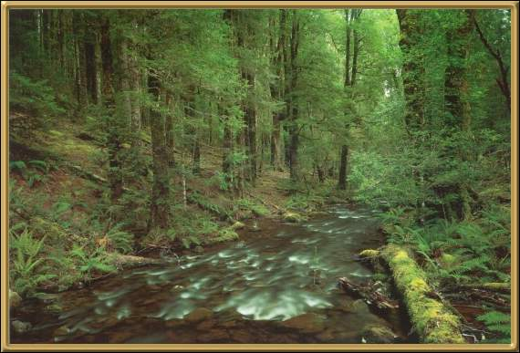

This area is formally known as the Arthur Pieman Region, but it is more often referred to as the Tarkine Wilderness by conservationists who are trying to preserve the area. The Tarkine Wilderness is situated in the north-western corner of Tasmania and is largely undisturbed wilderness covering more than 350,000 hectares, including Australia's largest area of undisturbed rainforest. There are currently moves being made by the government of Tasmania to open the area for mining and forestry.